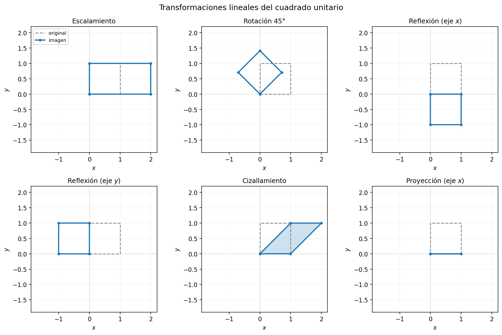
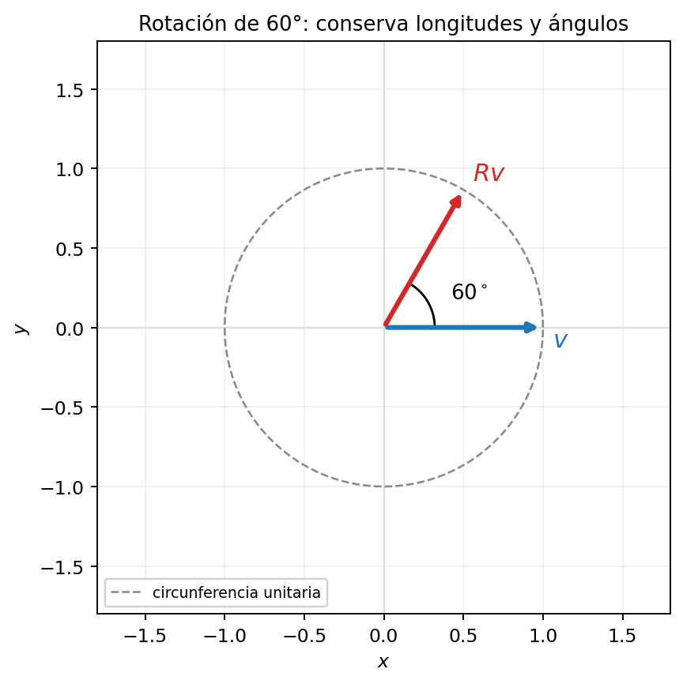
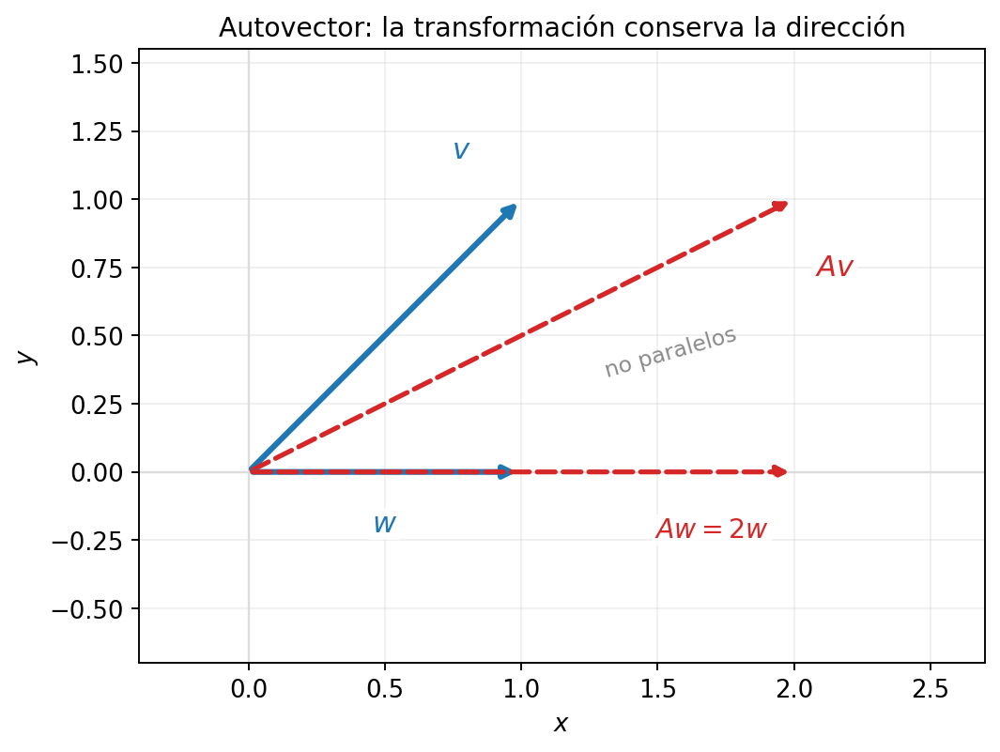
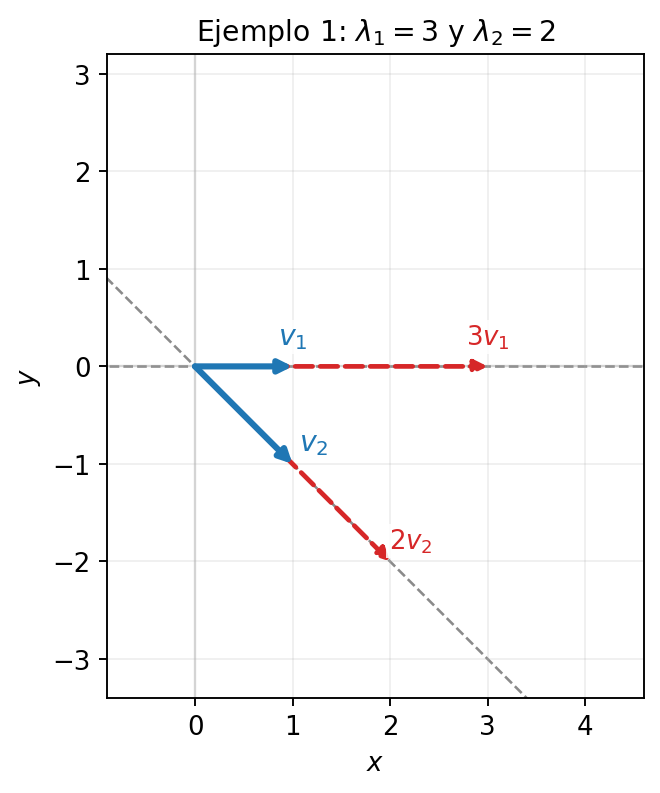
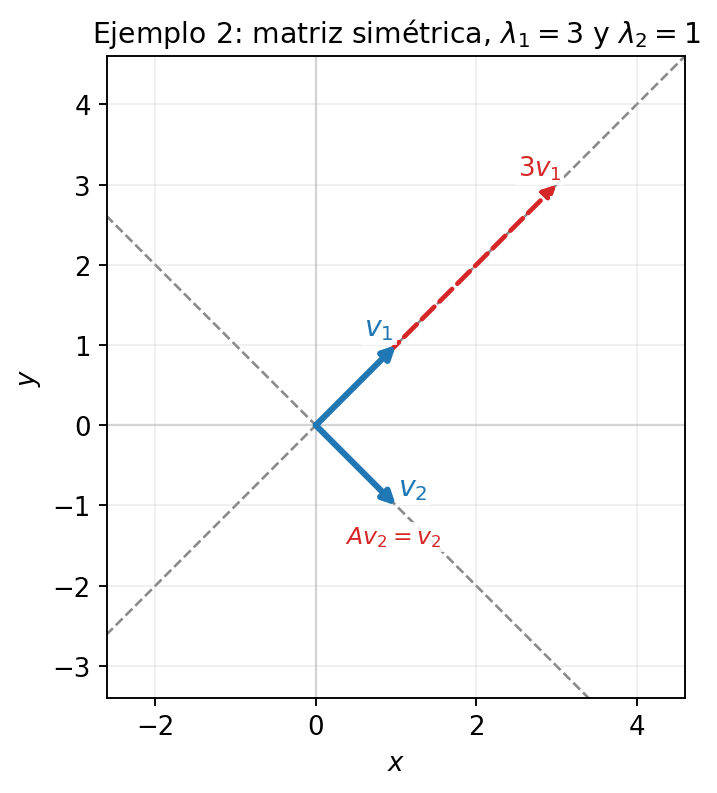
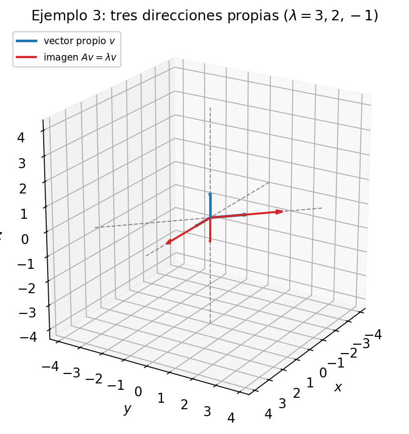
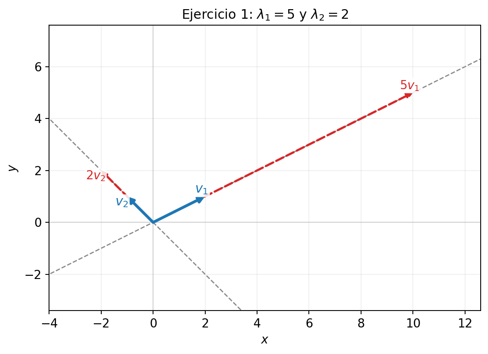
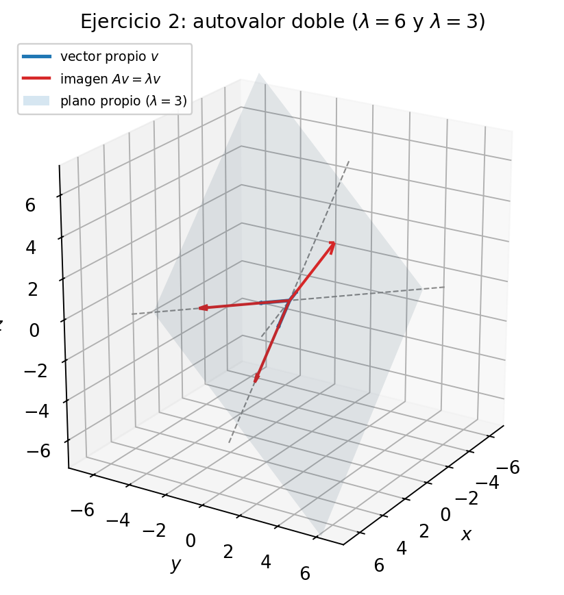

Al finalizar, el estudiante será capaz de:
Una matriz A\in M_{2\times2}(R) define una transformación del plano: T:R^2\to R^2, \qquad T(x)=Ax. Es lineal porque T(u+v)=T(u)+T(v), \qquad T(\alpha u)=\alpha T(u). El origen queda fijo y las rectas por el origen se transforman en rectas por el origen.
El cuadrado unitario se transforma en un paralelogramo (o en un segmento, si A no es invertible). Cada panel muestra la figura original y su imagen.

La rotación de 60^\circ conserva longitudes y ángulos, pero cambia la dirección de casi todo vector.

Un autovector es una dirección especial en la que la transformación no cambia la dirección: solo alarga, acorta o invierte el vector.

En la figura, w=(1,0) es autovector porque Aw=2w. En cambio, v=(1,1) no lo es, porque Av=(2,1) no es múltiplo de v.
Sea A\in M_n(R). Un escalar \lambda es un autovalor de A si existe un vector x\neq0 tal que Ax=\lambda x. El vector x es un autovector asociado a \lambda.
Para cada autovalor \lambda, el conjunto de todos sus autovectores (junto con el vector cero) es E_\lambda=\ker(A-\lambda I)=\{x: (A-\lambda I)x=0\}. Es un subespacio vectorial de R^n.
Si x es autovector, cualquier múltiplo no nulo \alpha x también lo es: A(\alpha x)=\alpha Ax=\alpha\lambda x=\lambda(\alpha x).
El valor de \lambda describe qué le hace la transformación a la dirección propia:
La suma de los autovalores es la traza y el producto es el determinante: \lambda_1+\lambda_2=\operatorname{tr}(A), \qquad \lambda_1\lambda_2=\det(A).
Partimos de Ax=\lambda x. Entonces Ax-\lambda x=0 \iff (A-\lambda I)x=0. Para que exista una solución x\neq0, la matriz A-\lambda I debe ser singular: \det(A-\lambda I)=0.
f(\lambda)=\det(A-\lambda I) es el polinomio característico de A, y la ecuación f(\lambda)=0 es la ecuación característica.
Como A es de tamaño n\times n, f tiene grado n y existen a lo más n autovalores reales, contando multiplicidad.
Considere A=\begin{pmatrix}3&1\\0&2\end{pmatrix}. Realice cada uno de los siguientes pasos:
f(\lambda)=\det(A-\lambda I)=\begin{vmatrix}3-\lambda&1\\0&2-\lambda\end{vmatrix}=(3-\lambda)(2-\lambda). Por lo tanto, \lambda_1=3, \qquad \lambda_2=2.
Para encontrar los autovectores resolvemos el sistema homogéneo (A-\lambda I)x=0.
Para \lambda=3: A-3I=\begin{pmatrix}0&1\\0&-1\end{pmatrix}, \qquad \begin{pmatrix}0&1\\0&-1\end{pmatrix}\begin{pmatrix}x\\y\end{pmatrix}=\begin{pmatrix}0\\0\end{pmatrix}. Igualando componentes: \begin{cases}0x+y=0\\ 0x-y=0\end{cases} \implies y=0. La variable x queda libre, así que los autovectores son (x,0)=x(1,0).
Para \lambda=2: A-2I=\begin{pmatrix}1&1\\0&0\end{pmatrix}, \qquad \begin{pmatrix}1&1\\0&0\end{pmatrix}\begin{pmatrix}x\\y\end{pmatrix}=\begin{pmatrix}0\\0\end{pmatrix}. Igualando componentes: x+y=0 \implies x=-y. Con y libre, los autovectores son (x,y)=y(-1,1).
Verificar Ax=\lambda x consiste en comprobar que la imagen de x bajo A es el mismo vector x multiplicado por \lambda.
Para x=(1,0)^T y \lambda=3: Ax=\begin{pmatrix}3&1\\0&2\end{pmatrix}\begin{pmatrix}1\\0\end{pmatrix}=\begin{pmatrix}3\\0\end{pmatrix}, \qquad \lambda x=3\begin{pmatrix}1\\0\end{pmatrix}=\begin{pmatrix}3\\0\end{pmatrix}. Ambos resultados coinciden.
Para x=(1,-1)^T y \lambda=2: Ax=\begin{pmatrix}3&1\\0&2\end{pmatrix}\begin{pmatrix}1\\-1\end{pmatrix}=\begin{pmatrix}2\\-2\end{pmatrix}, \qquad \lambda x=2\begin{pmatrix}1\\-1\end{pmatrix}=\begin{pmatrix}2\\-2\end{pmatrix}. Ambos resultados coinciden.
Cada autovector queda sobre su recta propia y su imagen es un múltiplo de él.

Considere la matriz simétrica A=\begin{pmatrix}2&1\\1&2\end{pmatrix}. Realice cada uno de los siguientes pasos:
f(\lambda)=\begin{vmatrix}2-\lambda&1\\1&2-\lambda\end{vmatrix}=(2-\lambda)^2-1. Factorizando, f(\lambda)=(3-\lambda)(1-\lambda), por lo tanto \lambda_1=3 y \lambda_2=1.
Para \lambda=3: A-3I=\begin{pmatrix}-1&1\\1&-1\end{pmatrix} \implies x=y, así que un autovector es (1,1).
Para \lambda=1: A-I=\begin{pmatrix}1&1\\1&1\end{pmatrix} \implies x=-y, así que un autovector es (1,-1).
A alarga por 3 la dirección (1,1) y deja igual la dirección (1,-1). Además, (1,1)\cdot(1,-1)=0: en una matriz simétrica, los autovectores de autovalores distintos son ortogonales.
Las dos direcciones propias son ortogonales: una se alarga por 3 y la otra queda igual.

Considere A=\begin{pmatrix}3&1&0\\0&2&0\\0&0&-1\end{pmatrix}. Realice cada uno de los siguientes pasos:
Antes de calcular el determinante, conviene reconocer si la matriz es triangular. Una matriz es triangular superior si todas las entradas bajo la diagonal principal son cero. En este caso, a_{21}=0, \qquad a_{31}=0, \qquad a_{32}=0, por lo que A es triangular superior.
Para una matriz triangular, el determinante es el producto de las entradas de la diagonal. Además, A-\lambda I también es triangular, con diagonal 3-\lambda, 2-\lambda y -1-\lambda. Por lo tanto, f(\lambda)=\det(A-\lambda I)=(3-\lambda)(2-\lambda)(-1-\lambda). Los autovalores se leen directamente en la diagonal: \lambda_1=3, \qquad \lambda_2=2, \qquad \lambda_3=-1.
Para \lambda=3: A-3I=\begin{pmatrix}0&1&0\\0&-1&0\\0&0&-4\end{pmatrix} \implies y=0,\; z=0, así que un autovector es (1,0,0).
Para \lambda=2: A-2I=\begin{pmatrix}1&1&0\\0&0&0\\0&0&-3\end{pmatrix} \implies x+y=0,\; z=0, así que un autovector es (-1,1,0).
Para \lambda=-1: A+I=\begin{pmatrix}4&1&0\\0&3&0\\0&0&0\end{pmatrix} \implies x=0,\; y=0, así que un autovector es (0,0,1).
Cada dirección propia se escala por su autovalor; una de ellas se invierte porque \lambda=-1.

Considere A=\begin{pmatrix}4&2\\1&3\end{pmatrix}. Realice cada uno de los siguientes pasos:
f(\lambda)=\begin{vmatrix}4-\lambda&2\\1&3-\lambda\end{vmatrix}=(4-\lambda)(3-\lambda)-2. Expandiendo, f(\lambda)=\lambda^2-7\lambda+10=(5-\lambda)(2-\lambda). Por lo tanto, \lambda_1=5, \qquad \lambda_2=2.
Para \lambda=5: A-5I=\begin{pmatrix}-1&2\\1&-2\end{pmatrix} \implies x=2y, así que un autovector es (2,1).
Para \lambda=2: A-2I=\begin{pmatrix}2&2\\1&1\end{pmatrix} \implies x=-y, así que un autovector es (-1,1).
A\begin{pmatrix}2\\1\end{pmatrix}=\begin{pmatrix}10\\5\end{pmatrix}=5\begin{pmatrix}2\\1\end{pmatrix}, \qquad A\begin{pmatrix}-1\\1\end{pmatrix}=\begin{pmatrix}-2\\2\end{pmatrix}=2\begin{pmatrix}-1\\1\end{pmatrix}.
Las imágenes de los autovectores permanecen sobre las mismas rectas.

Considere la matriz simétrica A=\begin{pmatrix}4&1&1\\1&4&1\\1&1&4\end{pmatrix}. Realice cada uno de los siguientes pasos:
f(\lambda)=\begin{vmatrix}4-\lambda&1&1\\1&4-\lambda&1\\1&1&4-\lambda\end{vmatrix}=(6-\lambda)(3-\lambda)^2. Por lo tanto, \lambda_1=6 \text{ (simple)}, \qquad \lambda_2=3 \text{ (multiplicidad 2)}.
Para \lambda=6: A-6I=\begin{pmatrix}-2&1&1\\1&-2&1\\1&1&-2\end{pmatrix} \implies x=y=z, así que un autovector es (1,1,1).
Para \lambda=3: A-3I=\begin{pmatrix}1&1&1\\1&1&1\\1&1&1\end{pmatrix} \implies x+y+z=0, y dos autovectores linealmente independientes son (1,-1,0) y (1,0,-1).
La dirección (1,1,1) se alarga por 6 y el plano x+y+z=0 se escala por 3.
